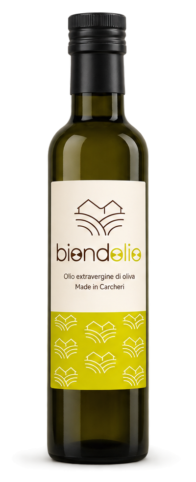
IL NOSTRO OLIO · CARCHERI
Dalla terra,
senza fretta.
Il nostro olio, nato tra gli ulivi di famiglia. Raccolto, frantoio, persone: tutto qui.
Scopri BiondOlio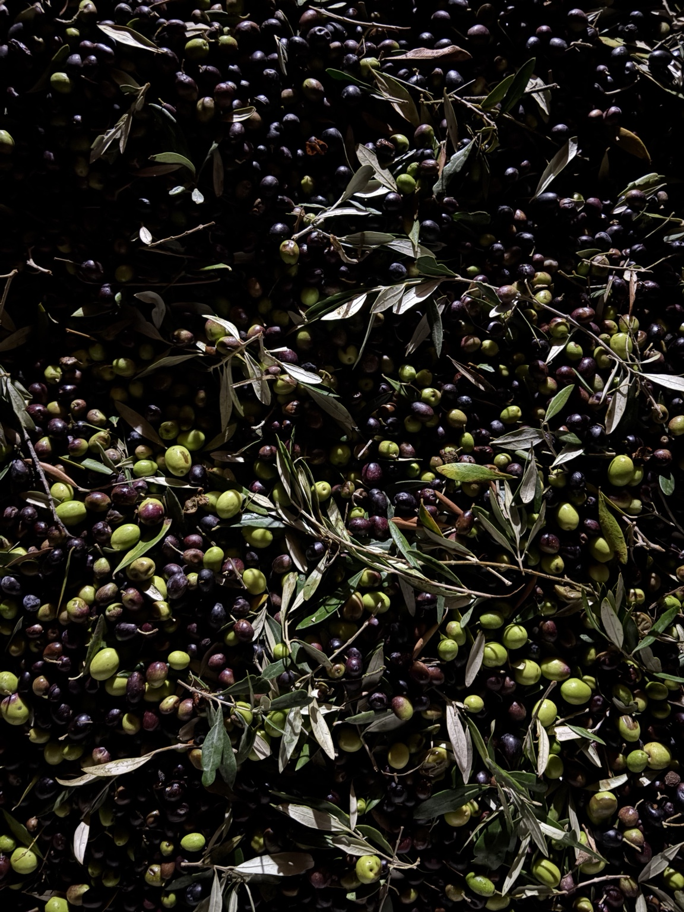
BIONDOLIO · 2026
Terra.
Terra.
Raccolta.
Frantoio.
Olio.
01LA STORIAMADE IN CARCHERI
Prima dell'etichetta,
c'erano già gli ulivi.
Il nostro olio nasce per dare un nome e un'immagine a qualcosa che in famiglia facevamo già.
Una storia semplice, fatta di stagioni.
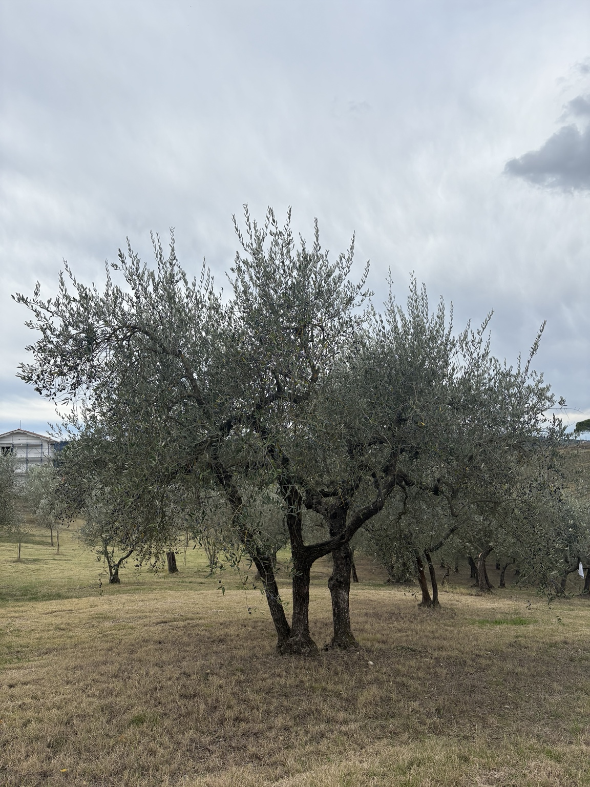
L'ORIGINE / CARCHERI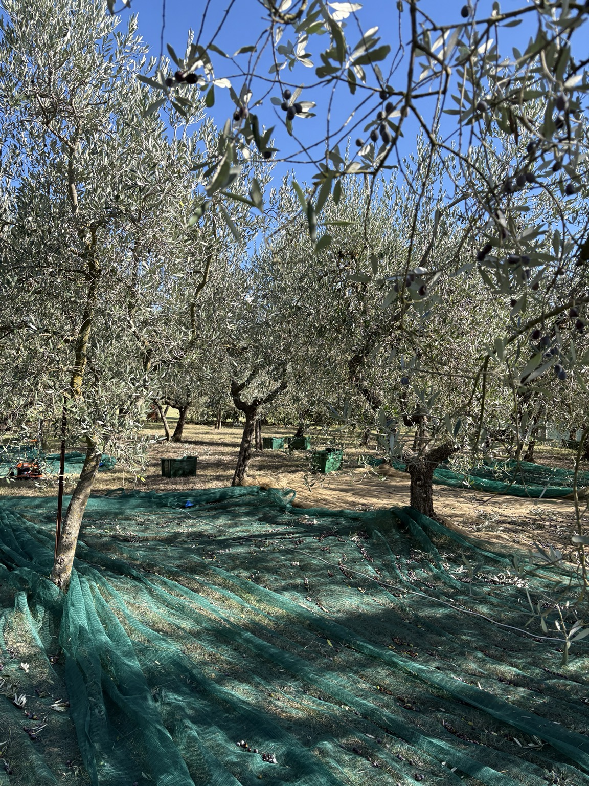
IL LUOGO DA CUI TUTTO PARTE
L'oliveta.
02IL RACCOLTOSTAGIONE / 2026
Gesti di sempre.
Ogni anno diversi.
Le reti tra gli alberi, le olive raccolte e le mani che lavorano. Una giornata dopo l'altra, fino all'ultima cassetta.
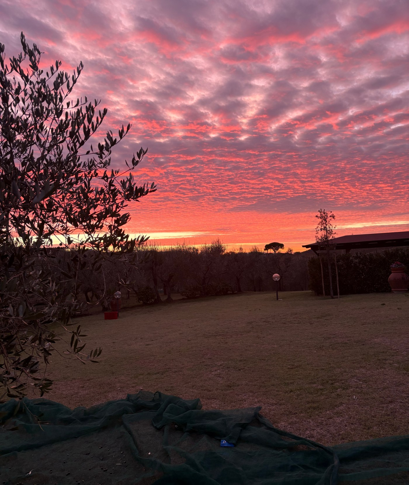
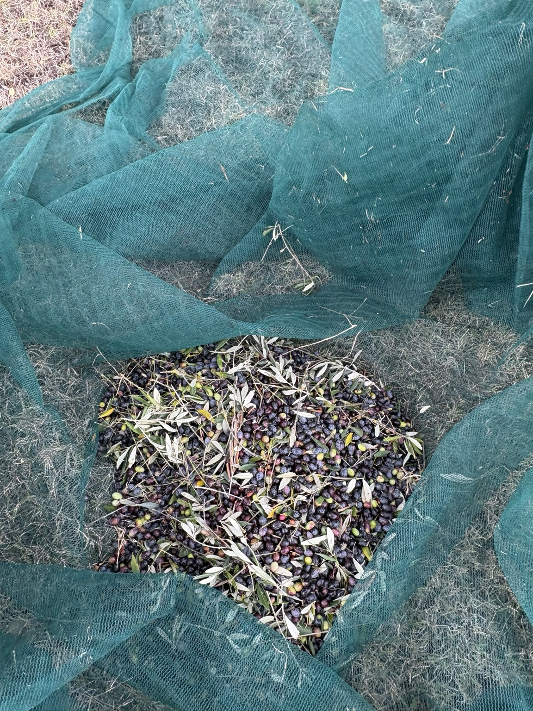
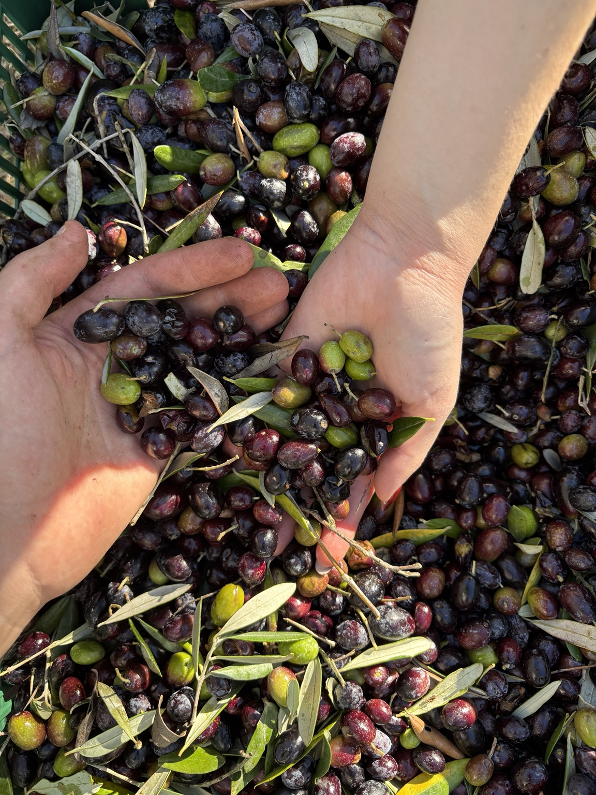
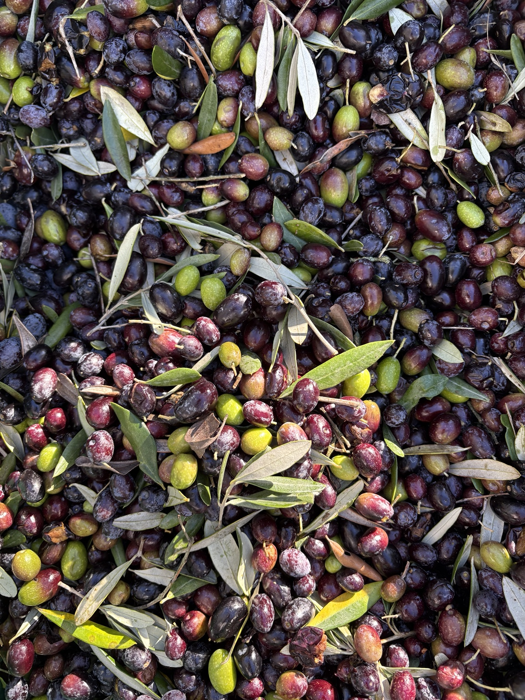
OGNI ANNATA È DIVERSAVerde, viola,
Verde, viola,
quasi nero.
Prima di diventare olio.
03IL FRANTOIODAL FRUTTO ALL'OLIO
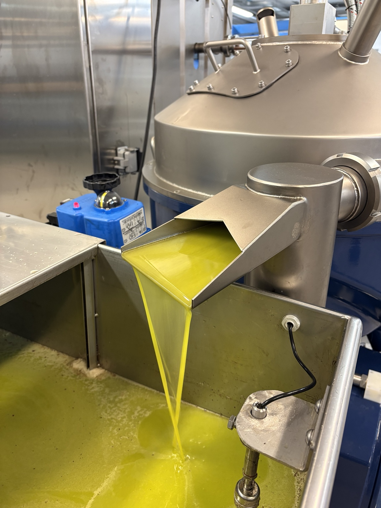
FRANGERE! FRANGERE! FRANGERE!
Il momento in cui cambia tutto.
Dal frutto appena raccolto all'olio nuovo. È il passaggio più breve, e quello che aspettiamo di più.
2026RACCOLTO
EVOEXTRAVERGINE
GREZZONON FILTRATO
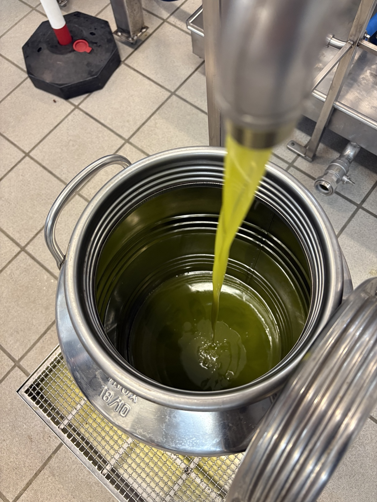
IL RISULTATO DI UN ANNO
Olio NOVO.
04I PRODOTTIBOTTIGLIA & LATTA
Due formati.
Stessa identità.
Una bottiglia elegante per la tavola e una latta da 5 litri pensata per chi vuole portare a casa il raccolto di un'intera stagione.
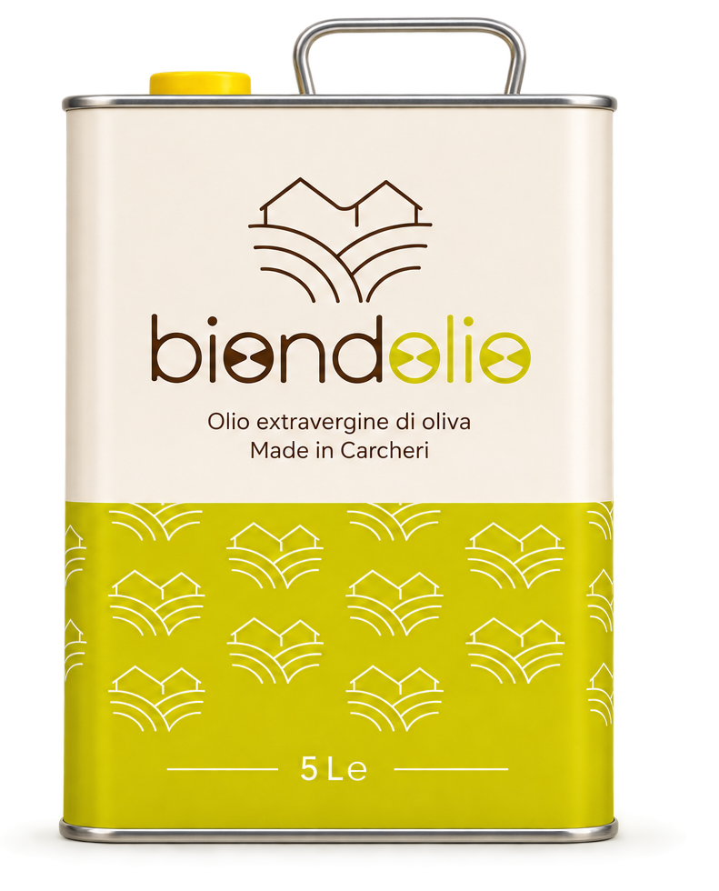
05LE PERSONEUNA COSA DI FAMIGLIA
UNA COSA SEMPLICE
Alla fine,
Alla fine,
BiondOlio siamo noi.
Non un'azienda costruita a tavolino. Un'oliveta, le merende nel campo, qualche giornata di lavoro insieme e la voglia di raccontare bene ciò che produciamo.
FATTO CON AMORE E PASSIONE CARCHERI
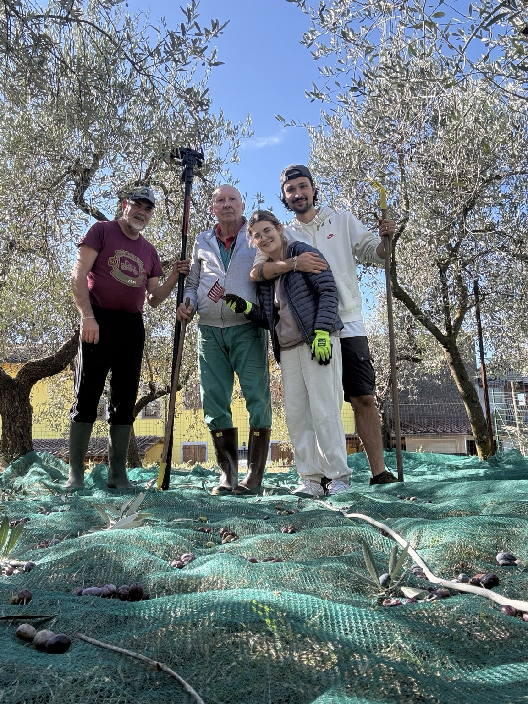
CONTACT US
Contact us
Vuoi scriverci?
Per informazioni, disponibilità o semplicemente per metterti in contatto con noi, puoi scriverci direttamente via email.